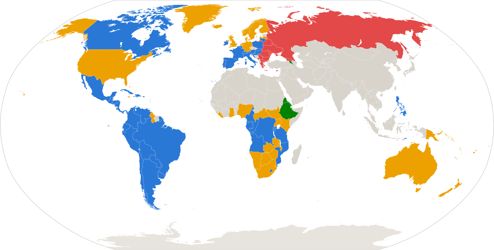

1. الْمُقَدِّمَةُ
الْمَسِيحِيَّةُ أَكْبَرُ دِيَانَاتِ الْعَالَمِ: يُقَدَّرُ عَدَدُ الْمَسِيحِيِّينَ بِنَحْوِ 2.4 مِلْيَارٍ — كَمَا يُقَدَّرُ عَدَدُ الْمُسْلِمِينَ بِنَحْوِ مِلْيَارَيْنِ — مِنْ أَصْلِ نَحْوِ 8.2 مِلْيَارِ إِنْسَانٍ عَلَى الْأَرْضِ[15]. وَهَذِهِ تَقْدِيرَاتٌ إِحْصَائِيَّةٌ بِحَسَبِ الِانْتِمَاءِ: فَمِنَ الْوَاضِحِ أَنَّ كَثِيرِينَ مِمَّنْ يَعِيشُونَ فِي الْمَنَاطِقِ «الْمَسِيحِيَّةِ» أَوِ «الْإِسْلَامِيَّةِ» لَا يَعُدُّونَ أَنْفُسَهُمْ مَسِيحِيِّينَ وَلَا مُسْلِمِينَ، أَوْ لَا يُمَارِسُونَ مِنْ دِينِهِمْ شَيْئًا يُذْكَرُ. وَالْمَسِيحِيَّةُ قَائِمَةٌ تَارِيخِيًّا فِي ثَلَاثَةِ فُرُوعٍ رَئِيسِيَّةٍ:
| الْفَرْعُ | الْعَدَدُ (تَقْدِيرَاتٌ) | وَصْفٌ مُوجَزٌ |
|---|---|---|
| الْكَاثُولِيكِيَّةُ | ≈ 1.4 مِلْيَارٍ | كَنِيسَةٌ وَاحِدَةٌ مَرْكَزُهَا رُومَا يَرْأَسُهَا الْبَابَا؛ وَالْعَدَدُ بِحَسَبِ الْحَوْلِيَّةِ الْبَابَوِيَّةِ الرَّسْمِيَّةِ Annuario Pontificio[15] |
| الْبُرُوتِسْتَانْتِيَّةُ | ≈ 800 مِلْيُونٍ – مِلْيَارٌ | طَوَائِفُ مُتَعَدِّدَةٌ (لُوثَرِيُّونَ، مَعْمَدَانِيُّونَ، إِنْجِيلِيُّونَ، خَمْسِينِيُّونَ وَغَيْرُهُمْ) نَشَأَتْ مِنْ حَرَكَةِ الْإِصْلَاحِ فِي الْقَرْنِ السَّادِسَ عَشَرَ |
| الْأُرْثُوذُكْسِيَّةُ | ≈ 220–260 مِلْيُونًا | أُسْرَةُ كَنَائِسَ مَحَلِّيَّةٍ (الْقُسْطَنْطِينِيَّةُ، الرُّوسِيَّةُ وَغَيْرُهُمَا)؛ وَتُلْحَقُ بِهَا تَارِيخِيًّا الْكَنَائِسُ الْمَشْرِقِيَّةُ الْقَدِيمَةُ (≈ 60 مِلْيُونًا: الْأَقْبَاطُ وَالْأَرْمَنُ وَالْأَحْبَاشُ وَالسُّرْيَانُ) |
لِهَذِهِ الْمِلْيَارَاتِ كِتَابٌ أَسَاسِيٌّ وَاحِدٌ: الْكِتَابُ الْمُقَدَّسُ، الْمُؤَلَّفُ مِنْ جُزْأَيْنِ. الْعَهْدُ الْقَدِيمُ — الْأَسْفَارُ الَّتِي تَسَلَّمَتْهَا الْمَسِيحِيَّةُ مِنْ إِسْرَائِيلَ الْقَدِيمِ (39 سِفْرًا يَعْتَرِفُ بِهَا الْجَمِيعُ، تُضَافُ إِلَيْهَا أَسْفَارٌ إِضَافِيَّةٌ بِسَبَبِهَا تَخْتَلِفُ كُتُبُ الْفُرُوعِ الْمُقَدَّسَةُ فِي الْحَجْمِ). وَالْعَهْدُ الْجَدِيدُ — 27 سِفْرًا كَتَبَهَا الْجِيلُ الْمَسِيحِيُّ الْأَوَّلُ، وَقَائِمَتُهَا مُتَطَابِقَةٌ تَمَامًا عِنْدَ جَمِيعِ الْفُرُوعِ.
وَفِي قَلْبِ هَذِهِ الْقَائِمَةِ الْمُشْتَرَكَةِ — الْأَنَاجِيلُ الْأَرْبَعَةُ: مَتَّى وَمَرْقُسُ وَلُوقَا وَيُوحَنَّا. وَمَهْمَا كَانَتِ الْخِلَافَاتُ الَّتِي فَرَّقَتِ الْكَنَائِسَ عَبْرَ أَلْفَيْ سَنَةٍ — حَوْلَ أَسْفَارِ الْعَهْدِ الْقَدِيمِ، أَوِ التَّقْلِيدِ، أَوْ نِظَامِ الْكَنِيسَةِ — فَإِنَّ الْجَمِيعَ بِلَا اسْتِثْنَاءٍ مُتَّحِدُونَ عَلَى هَذِهِ الْأَسْفَارِ الْأَرْبَعَةِ: فَالْكَاثُولِيكِيُّ فِي رُومَا، وَالْبُرُوتِسْتَانْتِيُّ فِي أَمْرِيكَا، وَالْأُرْثُوذُكْسِيُّ فِي رُوسْيَا، وَالْقِبْطِيُّ فِي مِصْرَ يَقْرَؤُونَ الْأَنَاجِيلَ الْأَرْبَعَةَ نَفْسَهَا وَبِالتَّرْتِيبِ نَفْسِهِ. لِذَلِكَ، لِفَهْمِ الْأَسَاسِ الْمُشْتَرَكِ لِجَمِيعِ التَّيَّارَاتِ الْمَسِيحِيَّةِ، لَا بُدَّ مِنْ دِرَاسَةِ هَذِهِ الْأَسْفَارِ الْأَرْبَعَةِ بِالذَّاتِ: مَنْ كَتَبَهَا، وَكَيْفَ نَشَأَتْ، وَمَا مَضْمُونُهَا، وَبِمَ تَخْتَلِفُ بَعْضُهَا عَنْ بَعْضٍ.
مَنْطِقُ هَذِهِ الْوَثِيقَةِ — مِنَ الْعَامِّ إِلَى الْخَاصِّ:
جَمِيعُ مَا يَرِدُ هُنَا مُسْتَنَدٌ إِلَى مَصَادِرَ مَسِيحِيَّةٍ — نَصِّ الْكِتَابِ الْمُقَدَّسِ نَفْسِهِ، وَآبَاءِ الْكَنِيسَةِ فِي الْقُرُونِ الثَّانِي–الرَّابِعِ (بَابِيَاسُ، إِيرِينَاوُسُ، إِكْلِيمَنْدُسُ الْإِسْكَنْدَرِيُّ، أُورِيجَانُوسُ، أُوسَابِيُوسُ)، وَقَوَائِمِ الْقَانُونِ الْقَدِيمَةِ، وَالْوَثَائِقِ الْعَقَائِدِيَّةِ لِلْكَنَائِسِ. وَالْحَوَاشِي [1]–[18] تُحِيلُ إِلَى قِسْمِ «الْمَصَادِرِ».
2. الْعَهْدُ الْقَدِيمُ: مِمَّ يَتَكَوَّنُ
الْعَهْدُ الْقَدِيمُ هُوَ الْجُزْءُ الْأَوَّلُ مِنَ الْكِتَابِ الْمُقَدَّسِ: الْأَسْفَارُ الْمُقَدَّسَةُ الَّتِي تَسَلَّمَتْهَا الْمَسِيحِيَّةُ مِنْ إِسْرَائِيلَ الْقَدِيمِ. وَنَوَاتُهُ 39 سِفْرًا يَعْتَرِفُ بِهَا جَمِيعُ الْمَسِيحِيِّينَ، مُقَسَّمَةً إِلَى أَرْبَعِ مَجْمُوعَاتٍ — افْتَحْ كُلَّ مَجْمُوعَةٍ لِتَرَى الْقَائِمَةَ الْكَامِلَةَ.
📜 أَسْفَارُ الشَّرِيعَةِ — أَسْفَارُ مُوسَى الْخَمْسَةُ (التَّوْرَاةُ)5 أَسْفَارٍ
أَسَاسُ الْعَهْدِ الْقَدِيمِ كُلِّهِ: خَلْقُ الْعَالَمِ، وَعَهْدُ اللهِ مَعَ إِبْرَاهِيمَ، وَالْخُرُوجُ مِنْ مِصْرَ، وَالْوَصَايَا الْمُعْطَاةُ عَلَى جَبَلِ سِينَاءَ.
- التَّكْوِينُ
- الْخُرُوجُ
- اللَّاوِيِّينَ
- الْعَدَدُ
- التَّثْنِيَةُ
🏛 الْأَسْفَارُ التَّارِيخِيَّةُ — تَارِيخُ شَعْبِ إِسْرَائِيلَ12 سِفْرًا
مِنْ دُخُولِ أَرْضِ الْمَوْعِدِ إِلَى الْعَوْدَةِ مِنَ السَّبْيِ الْبَابِلِيِّ: عَصْرُ الْقُضَاةِ، وَالْمَلِكَانِ دَاوُدُ وَسُلَيْمَانُ، وَانْقِسَامُ الْمَمْلَكَةِ وَسُقُوطُهَا، وَإِعَادَةُ بِنَاءِ أُورُشَلِيمَ.
- يَشُوعُ
- الْقُضَاةُ
- رَاعُوثُ
- صَمُوئِيلُ الْأَوَّلُ
- صَمُوئِيلُ الثَّانِي
- الْمُلُوكُ الْأَوَّلُ
- الْمُلُوكُ الثَّانِي
- أَخْبَارُ الْأَيَّامِ الْأَوَّلُ
- أَخْبَارُ الْأَيَّامِ الثَّانِي
- عَزْرَا
- نَحَمْيَا
- أَسْتِيرُ
مُلَاحَظَةٌ: فِي التَّقْلِيدِ الْأُرْثُوذُكْسِيِّ (وَمِنْهُ التَّرْجَمَةُ السِّينُودِسِيَّةُ الرُّوسِيَّةُ) تُسَمَّى أَسْفَارُ صَمُوئِيلَ وَالْمُلُوكِ «أَسْفَارَ الْمُلُوكِ الْأَوَّلَ–الرَّابِعَ» — وَهِيَ الْأَسْفَارُ نَفْسُهَا.
🎼 الْأَسْفَارُ التَّعْلِيمِيَّةُ — الشِّعْرُ وَالْحِكْمَةُ5 أَسْفَارٍ
صَلَوَاتٌ وَتَسَابِيحُ وَتَأَمُّلَاتٌ فِي اللهِ وَالْأَلَمِ وَمَعْنَى الْحَيَاةِ وَالْمَحَبَّةِ.
- أَيُّوبُ
- الْمَزَامِيرُ
- أَمْثَالُ سُلَيْمَانَ
- الْجَامِعَةُ
- نَشِيدُ الْأَنْشَادِ
🔥 الْأَسْفَارُ النَّبَوِيَّةُ — رُسُلُ اللهِ إِلَى شَعْبِهِ17 سِفْرًا
تَوْبِيخُ الشَّعْبِ وَدَعْوَتُهُ إِلَى التَّوْبَةِ وَمَوَاعِيدُ الْمَسِيحِ الْآتِي: خَمْسَةُ أَنْبِيَاءَ «كِبَارٍ» وَاثْنَا عَشَرَ «صِغَارًا» (سُمُّوا كَذَلِكَ لِحَجْمِ أَسْفَارِهِمْ لَا لِمَكَانَتِهِمْ).
- إِشَعْيَاءُ
- إِرْمِيَا
- مَرَاثِي إِرْمِيَا
- حِزْقِيَالُ
- دَانِيَالُ
- هُوشَعُ
- يُوئِيلُ
- عَامُوسُ
- عُوبَدْيَا
- يُونَانُ
- مِيخَا
- نَاحُومُ
- حَبَقُّوقُ
- صَفَنْيَا
- حَجَّيْ
- زَكَرِيَّا
- مَلَاخِي
فَلِمَاذَا إِذًا تَخْتَلِفُ الْكُتُبُ الْمُقَدَّسَةُ فِي الْحَجْمِ بَيْنَ الطَّوَائِفِ؟
- كُتِبَتْ هَذِهِ الْأَسْفَارُ بِالْعِبْرِيَّةِ الْقَدِيمَةِ — وَعِنْدَ الْيَهُودِ يُسَمَّى هَذَا الْكِتَابُ «التَّنَاخَ» (الْأَسْفَارُ الـ39 نَفْسُهَا، لَكِنَّهَا مَجْمُوعَةٌ فِي 24 سِفْرًا).
أَيْ: 24 سِفْرًا فِي التَّنَاخِ الْيَهُودِيِّ = 39 سِفْرًا فِي الْعَهْدِ الْقَدِيمِ الْمَسِيحِيِّ: الْمَضْمُونُ وَاحِدٌ، وَالْفَرْقُ فِي الْعَدِّ فَقَطْ — فَعِنْدَ الْيَهُودِ تُجْمَعُ الْأَسْفَارُ الْمُزْدَوِجَةُ فِي سِفْرٍ وَاحِدٍ (مَثَلًا: صَمُوئِيلُ الْأَوَّلُ وَالثَّانِي = سِفْرٌ وَاحِدٌ)، وَالْأَنْبِيَاءُ الصِّغَارُ الِاثْنَا عَشَرَ يُعَدُّونَ سِفْرًا وَاحِدًا. - فِي الْقُرُونِ الثَّالِثِ–الْأَوَّلِ قَبْلَ الْمِيلَادِ أُنْجِزَتْ تَرْجَمَةٌ يُونَانِيَّةٌ — التَّرْجَمَةُ السَّبْعِينِيَّةُ. وَدَخَلَ فِيهَا، إِلَى جَانِبِ الْأَسْفَارِ الـ39، عَدَدٌ مِنَ الْأَسْفَارِ الْإِضَافِيَّةِ الْمَكْتُوبَةِ فِي الْقُرُونِ الْأَخِيرَةِ قَبْلَ الْمَسِيحِ.
- الْكَنِيسَةُ الْأُولَى اسْتَعْمَلَتِ السَّبْعِينِيَّةَ بِالذَّاتِ — فَبَقِيَتِ الْأَسْفَارُ الْإِضَافِيَّةُ فِي كُتُبِ الْكَنَائِسِ الْمُقَدَّسَةِ، وَحَدَّدَ كُلُّ فَرْعٍ مَسِيحِيٍّ لَاحِقًا مَوْقِفَهُ مِنْهَا عَلَى طَرِيقَتِهِ.
✝ الْكِتَابُ الْمُقَدَّسُ الْبُرُوتِسْتَانْتِيُّ39 سِفْرًا
الْقَانُونُ الْعِبْرِيُّ وَحْدَهُ. الْأَسْفَارُ الْإِضَافِيَّةُ (يُسَمِّيهَا الْبُرُوتِسْتَانْتُ «الْأَبُوكْرِيفَا») لَا تُدْرَجُ فِي الْكِتَابِ الْمُقَدَّسِ: فَمُنْذُ الْإِصْلَاحِ فِي الْقَرْنِ السَّادِسَ عَشَرَ تُعَدُّ كِتَابَاتٍ بَشَرِيَّةً نَافِعَةً لَا كِتَابَاتٍ مُوحًى بِهَا.
⛪ الْكِتَابُ الْمُقَدَّسُ الْكَاثُولِيكِيُّ46 سِفْرًا = 39 + 7
أُضِيفَتْ إِلَى الْأَسْفَارِ الـ39 سَبْعَةُ أَسْفَارٍ تُسَمَّى «الْقَانُونِيَّةَ الثَّانِيَةَ» — وَقَدْ أَقَرَّ مَجْمَعُ تْرِنْت (1546م) مُسَاوَاتَهَا بِالْأَسْفَارِ الْقَانُونِيَّةِ:
- طُوبِيَّا
- يَهُودِيتُ
- حِكْمَةُ سُلَيْمَانَ
- حِكْمَةُ يَشُوعَ بْنِ سِيرَاخَ
- بَارُوخُ (وَمَعَهُ رِسَالَةُ إِرْمِيَا)
- الْمَكَّابِيِّينَ الْأَوَّلُ
- الْمَكَّابِيِّينَ الثَّانِي
إِضَافَةً إِلَى زِيَادَاتٍ دَاخِلَ سِفْرَيْ أَسْتِيرَ وَدَانِيَالَ (تَسْبِحَةُ الْفِتْيَةِ الثَّلَاثَةِ، وَقِصَّةُ سُوسَنَّةَ، وَقِصَّةُ بِيلَ وَالتِّنِّينِ).
☦ الْكِتَابُ الْمُقَدَّسُ الْأُرْثُوذُكْسِيُّ (الطَّبْعَةُ السِّينُودِسِيَّةُ)50 سِفْرًا = 39 + 11
أُضِيفَ إِلَى الْأَسْفَارِ الـ39 أَحَدَ عَشَرَ سِفْرًا تُسَمَّى «غَيْرَ الْقَانُونِيَّةِ». وَمَكَانَتُهَا تَخْتَلِفُ عَمَّا عِنْدَ الْكَاثُولِيكِ: فَهِيَ تُعَدُّ نَافِعَةً وَمُفِيدَةً لِلْقِرَاءَةِ، لَكِنَّهَا غَيْرُ مُوحًى بِهَا، وَتُطْبَعُ فِي الْإِصْدَارَاتِ بِعَلَامَةٍ خَاصَّةٍ:
- عَزْرَا الثَّانِي
- عَزْرَا الثَّالِثُ
- طُوبِيَّا
- يَهُودِيتُ
- حِكْمَةُ سُلَيْمَانَ
- حِكْمَةُ يَشُوعَ بْنِ سِيرَاخَ
- رِسَالَةُ إِرْمِيَا
- بَارُوخُ
- الْمَكَّابِيِّينَ الْأَوَّلُ
- الْمَكَّابِيِّينَ الثَّانِي
- الْمَكَّابِيِّينَ الثَّالِثُ
وَكَذَلِكَ مَقَاطِعُ غَيْرُ قَانُونِيَّةٍ: صَلَاةُ مَنَسَّى، وَالْمَزْمُورُ 151، وَالزِّيَادَاتُ عَلَى أَسْتِيرَ وَدَانِيَالَ.
3. الْعَهْدُ الْجَدِيدُ: مِمَّ يَتَكَوَّنُ
27 سِفْرًا — الْقَائِمَةُ مُتَطَابِقَةٌ تَمَامًا عِنْدَ الْأُرْثُوذُكْسِ وَالْكَاثُولِيكِ وَالْبُرُوتِسْتَانْتِ وَالْكَنَائِسِ الْمَشْرِقِيَّةِ الْقَدِيمَةِ.
| الْمَجْمُوعَةُ | الْأَسْفَارُ | الْعَدَدُ |
|---|---|---|
| الْأَنَاجِيلُ | مَتَّى، مَرْقُسُ، لُوقَا، يُوحَنَّا | 4 |
| السِّفْرُ التَّارِيخِيُّ | أَعْمَالُ الرُّسُلِ | 1 |
| رَسَائِلُ الرَّسُولِ بُولُسَ | رُومِيَةُ، كُورِنْثُوسَ الْأُولَى وَالثَّانِيَةُ، غَلَاطِيَّةُ، أَفَسُسُ، فِيلِبِّي، كُولُوسِي، تَسَالُونِيكِي الْأُولَى وَالثَّانِيَةُ، تِيمُوثَاوُسَ الْأُولَى وَالثَّانِيَةُ، تِيطُسُ، فِلِيمُونُ، الْعِبْرَانِيِّينَ | 14 |
| الرَّسَائِلُ الْجَامِعَةُ | يَعْقُوبُ، بُطْرُسَ الْأُولَى وَالثَّانِيَةُ، يُوحَنَّا الْأُولَى وَالثَّانِيَةُ وَالثَّالِثَةُ، يَهُوذَا | 7 |
| السِّفْرُ النَّبَوِيُّ | رُؤْيَا يُوحَنَّا اللَّاهُوتِيِّ | 1 |
| الْمَجْمُوعُ | 27 | |
أَوَّلُ قَائِمَةٍ دَقِيقَةٍ بِالْأَسْفَارِ الـ27 جَمِيعِهَا وَضَعَهَا الْقِدِّيسُ أَثَنَاسِيُوسُ الْكَبِيرُ فِي رِسَالَتِهِ الْفِصْحِيَّةِ التَّاسِعَةِ وَالثَّلَاثِينَ (367م)[5]؛ وَثَبَّتَتْ هَذِهِ الْقَائِمَةَ مَجَامِعُ أَوَاخِرِ الْقَرْنِ الرَّابِعِ (هِيبُّون 393، قَرْطَاجُ 397)[6]. غَيْرَ أَنَّ الْأَنَاجِيلَ الْأَرْبَعَةَ كَانَتْ مُعْتَرَفًا بِهَا قَبْلَ ذَلِكَ بِزَمَنٍ طَوِيلٍ — وَبِاتِّفَاقٍ يَفُوقُ سَائِرَ الْأَسْفَارِ كُلَّهَا.
4. جَمِيعُ الْكَنَائِسِ مُتَّحِدَةٌ عَلَى هَذِهِ الْأَرْبَعَةِ
مَهْمَا اخْتُلِفَ فِي التَّارِيخِ حَوْلَ بَعْضِ الْأَسْفَارِ — سِفْرِ الرُّؤْيَا، أَوِ الرَّسَائِلِ الصَّغِيرَةِ، أَوِ الْأَسْفَارِ الْقَانُونِيَّةِ الثَّانِيَةِ — فَإِنَّ الْأَنَاجِيلَ الْأَرْبَعَةَ لَمْ تُنَازِعْ فِيهَا كَنِيسَةٌ وَاحِدَةٌ قَطُّ. وَهَذَا مُوَثَّقٌ مُنْذُ الْقَرْنِ الثَّانِي.
شَهَادَاتُ الْقَرْنَيْنِ الثَّانِي وَالثَّالِثِ
- نَحْوَ 155م — يُوسْتِينُوسُ الْفَيْلَسُوفُ (الشَّهِيدُ) يَكْتُبُ: «الرُّسُلُ فِي مَا دَوَّنُوهُ مِنْ مُذَكِّرَاتٍ تُدْعَى أَنَاجِيلَ سَلَّمُوا…» (الدِّفَاعُ الْأَوَّلُ، 66)، وَيَصِفُ اجْتِمَاعَاتِ الْمَسِيحِيِّينَ يَوْمَ الْأَحَدِ حَيْثُ تُقْرَأُ هَذِهِ الْمُذَكِّرَاتُ جَنْبًا إِلَى جَنْبٍ مَعَ كِتَابَاتِ الْأَنْبِيَاءِ (الدِّفَاعُ الْأَوَّلُ، 67)[1].
- نَحْوَ 170م — تَاتِيَانُ يَضَعُ «الدِّيَاطَسْرُون» (بِالْيُونَانِيَّةِ: «عَبْرَ الْأَرْبَعَةِ») — نَصًّا مُوَحَّدًا مُؤَلَّفًا مِنَ الْأَنَاجِيلِ الْأَرْبَعَةِ بِالذَّاتِ؛ وَنَفْسُ هَذَا الْعَمَلِ يَدُلُّ عَلَى أَيِّ الْكُتُبِ كَانَتْ تُعَدُّ الْمِعْيَارَ الْإِنْجِيلِيَّ[2].
- نَحْوَ 180م — الْقِدِّيسُ إِيرِينَاوُسُ أُسْقُفُ لِيُون، تِلْمِيذُ بُولِيكَارْبُوسَ (الَّذِي عَرَفَ الرَّسُولَ يُوحَنَّا)، يُقَرِّرُ الْأَنَاجِيلَ الْأَرْبَعَةَ قَاعِدَةً لَا تَتَبَدَّلُ:
«لَا يُمْكِنُ أَنْ تَكُونَ الْأَنَاجِيلُ أَكْثَرَ عَدَدًا مِمَّا هِيَ عَلَيْهِ وَلَا أَقَلَّ. فَبِمَا أَنَّ لِلْعَالَمِ الَّذِي نَعِيشُ فِيهِ أَرْبَعَةَ أَقْطَارٍ، وَأَرْبَعَ رِيَاحٍ رَئِيسِيَّةٍ، وَبِمَا أَنَّ الْكَنِيسَةَ مُنْتَشِرَةٌ عَلَى الْأَرْضِ كُلِّهَا، وَعَمُودُ الْكَنِيسَةِ وَقَاعِدَتُهَا هُوَ الْإِنْجِيلُ وَرُوحُ الْحَيَاةِ — فَيَنْبَغِي أَنْ يَكُونَ لَهَا أَرْبَعَةُ أَعْمِدَةٍ تَنْفُثُ مِنْ كُلِّ جِهَةٍ عَدَمَ الْفَسَادِ وَتُحْيِي النَّاسَ». — إِيرِينَاوُسُ أُسْقُفُ لِيُون، «ضِدَّ الْهَرْطَقَاتِ» 3.11.8 (نَحْوَ 180م؛ مُتَرْجَمٌ عَنِ النَّصِّ الرُّوسِيِّ الْمُدَقَّقِ)[3]
- نَحْوَ 170–200م — قَانُونُ مُورَاتُورِي (أَقْدَمُ قَائِمَةٍ كَنَسِيَّةٍ بِأَسْفَارِ الْعَهْدِ الْجَدِيدِ) يَبْدَأُ بِالْأَنَاجِيلِ؛ وَالنَّصُّ الْمَحْفُوظُ يُسَمِّي لُوقَا «كِتَابَ الْإِنْجِيلِ الثَّالِثَ» وَيُوحَنَّا — الرَّابِعَ[4].
- الْقَرْنُ الثَّالِثُ — الْبَرْدِيَّةُ P45 (مَجْمُوعَةُ تْشِسْتَر بِيتِي): مَخْطُوطٌ وَاحِدٌ يَضُمُّ الْأَنَاجِيلَ الْأَرْبَعَةَ وَأَعْمَالَ الرُّسُلِ — شَاهِدٌ مَادِّيٌّ عَلَى أَنَّ الْأَرْبَعَةَ كَانَتْ تُتَدَاوَلُ مَجْمُوعَةً وَاحِدَةً.
- نَحْوَ 230–250م — أُورِيجَانُوسُ: «هَذَا مَا عَرَفْتُهُ مِنَ التَّقْلِيدِ عَنِ الْأَنَاجِيلِ الْأَرْبَعَةِ، الْوَحِيدَةِ الَّتِي لَا نِزَاعَ فِيهَا فِي كَنِيسَةِ اللهِ كُلِّهَا الْمُنْتَشِرَةِ تَحْتَ السَّمَاءِ» (نَقَلَهُ أُوسَابِيُوسُ)[7].
وَحْدَةُ الطَّوَائِفِ الْيَوْمَ
| الْكَنِيسَةُ / التَّقْلِيدُ | عَدَدُ الْأَنَاجِيلِ فِي الْقَانُونِ | الْمَضْمُونُ |
|---|---|---|
| الْكَنَائِسُ الْأُرْثُوذُكْسِيَّةُ | 4 | الْأَنَاجِيلُ نَفْسُهَا: مَتَّى، مَرْقُسُ، لُوقَا، يُوحَنَّا — وَبِالتَّرْتِيبِ نَفْسِهِ |
| الْكَنِيسَةُ الْكَاثُولِيكِيَّةُ | 4 | |
| الْكَنَائِسُ الْبُرُوتِسْتَانْتِيَّةُ (جَمِيعُ الطَّوَائِفِ) | 4 | |
| الْكَنَائِسُ الْمَشْرِقِيَّةُ الْقَدِيمَةُ (الْأَقْبَاطُ، الْأَرْمَنُ، الْأَحْبَاشُ، السُّرْيَانُ) | 4 | |
| كَنِيسَةُ الْمَشْرِقِ الْآشُورِيَّةُ | 4 |
5. الْجُغْرَافِيَا: أَيْنَ يَنْتَشِرُ كُلُّ فَرْعٍ
أَكْبَرُ تَقْلِيدٍ مَسِيحِيٍّ فِي الْبُلْدَانِ الَّتِي يُشَكِّلُ الْمَسِيحِيُّونَ فِيهَا أَغْلَبِيَّةَ السُّكَّانِ (بِحَسَبِ مَرْكَزِ بْيُو لِلْأَبْحَاثِ، «الْمَسِيحِيَّةُ الْعَالَمِيَّةُ»[15]). وَبِاللَّوْنِ الرَّمَادِيِّ: الْبُلْدَانُ الَّتِي تَدِينُ أَغْلَبِيَّتُهَا بِدِيَانَاتٍ أُخْرَى أَوْ لَا تَنْتَسِبُ إِلَى دِينٍ.

6. إِنْجِيلُ مَتَّى الرَّمْزُ: إِنْسَانٌ (مَلَاكٌ)
التَّارِيخُ وَالْكَاتِبُ
أَقْدَمُ شَهَادَةٍ — بَابِيَاسُ أُسْقُفُ هِيرَابُولِيسَ (نَحْوَ 110–130م، نَقْلًا عَنِ «الشَّيْخِ»): «مَتَّى دَوَّنَ أَحَادِيثَ يَسُوعَ بِالْعِبْرِيَّةِ، وَتَرْجَمَهَا كُلٌّ كَمَا اسْتَطَاعَ» (نَقَلَهُ أُوسَابِيُوسُ؛ وَتُسَمَّى هَذِهِ «الْأَحَادِيثُ» فِي الْأَدَبِيَّاتِ اللَّاهُوتِيَّةِ «اللُّوغِيَا»)[8]. وَيُوَضِّحُ إِيرِينَاوُسُ: «مَتَّى أَصْدَرَ عِنْدَ الْعِبْرَانِيِّينَ وَبِلُغَتِهِمِ الْخَاصَّةِ كِتَابَةَ الْإِنْجِيلِ، فِي الْوَقْتِ الَّذِي كَانَ فِيهِ بُطْرُسُ وَبُولُسُ يُبَشِّرَانِ فِي رُومَا وَيُؤَسِّسَانِ الْكَنِيسَةَ»[9]. الْكَاتِبُ شَاهِدُ عِيَانٍ مِنَ الِاثْنَيْ عَشَرَ، عَشَّارٌ سَابِقٌ: وَمِنَ اللَّافِتِ أَنَّ هَذَا الْإِنْجِيلَ وَحْدَهُ يُسَمِّيهِ فِي قَوَائِمِ الرُّسُلِ «مَتَّى الْعَشَّارَ» (مَتَّى 10:3) — مِهْنَةٌ مُحْتَقَرَةٌ يُبْقِيهَا الْكَاتِبُ مُلْتَصِقَةً بِاسْمِهِ.
أَبْرَزُ الْمَلَامِحِ
- جِسْرٌ مِنَ الْعَهْدِ الْقَدِيمِ إِلَى الْجَدِيدِ: يَفْتَتِحُ السِّفْرَ بِنَسَبِ يَسُوعَ مِنْ إِبْرَاهِيمَ وَدَاوُدَ (مَتَّى 1:1) — بُرْهَانًا عَلَى أَنَّ يَسُوعَ هُوَ الْمَسِيَّا الْمَوْعُودُ لِإِسْرَائِيلَ.
- صِيغَةُ إِتْمَامِ النُّبُوءَاتِ: تَتَكَرَّرُ نَحْوَ 10 مَرَّاتٍ عِبَارَةُ «لِكَيْ يَتِمَّ مَا قِيلَ بِالنَّبِيِّ» — وَفِيهِ مِنَ اقْتِبَاسَاتِ الْعَهْدِ الْقَدِيمِ أَكْثَرُ مِنْ أَيِّ إِنْجِيلٍ آخَرَ (نَحْوُ 60 اقْتِبَاسًا مُبَاشِرًا).
- خُطَبُ يَسُوعَ الْخَمْسُ الْكُبْرَى (مُوَازَاةً لِأَسْفَارِ مُوسَى الْخَمْسَةِ): الْمَوْعِظَةُ عَلَى الْجَبَلِ (5–7)، وَصَايَا الِاثْنَيْ عَشَرَ (10)، أَمْثَالُ الْمَلَكُوتِ (13)، عَنِ الْكَنِيسَةِ (18)، عَنِ الْأَزْمِنَةِ الْأَخِيرَةِ (24–25).
- «مَلَكُوتُ السَّمَاوَاتِ» — تَعْبِيرٌ يَخْتَصُّ بِهِ مَتَّى (تَوْقِيرًا مِنَ الْيَهُودِ لِاسْمِ اللهِ).
- الْإِنْجِيلُ الْوَحِيدُ الَّذِي تَرِدُ فِيهِ كَلِمَةُ «الْكَنِيسَةِ» (مَتَّى 16:18؛ 18:17)، وَيُخْتَمُ بِالْإِرْسَالِيَّةِ الْعُظْمَى: «اذْهَبُوا وَتَلْمِذُوا جَمِيعَ الْأُمَمِ وَعَمِّدُوهُمْ بِاسْمِ الْآبِ وَالِابْنِ وَالرُّوحِ الْقُدُسِ» (مَتَّى 28:19، تَرْجَمَةُ فَانْ دَايْك).
7. إِنْجِيلُ مَرْقُسَ الرَّمْزُ: أَسَدٌ
التَّارِيخُ وَالْكَاتِبُ
شَهَادَةُ بَابِيَاسَ (نَحْوَ 110–130م) — أَقْدَمُ وَصْفٍ لِنَشْأَةِ الْإِنْجِيلِ:
«كَانَ مَرْقُسُ تُرْجُمَانَ بُطْرُسَ؛ فَدَوَّنَ بِدِقَّةٍ كُلَّ مَا حَفِظَهُ مِمَّا قَالَهُ الرَّبُّ وَفَعَلَهُ، لَكِنْ لَيْسَ بِالتَّرْتِيبِ، إِذْ لَمْ يَسْمَعِ الرَّبَّ بِنَفْسِهِ وَلَمْ يُرَافِقْهُ… [حَرِيصًا عَلَى] أَلَّا يُغْفِلَ شَيْئًا وَأَلَّا يَنْقُلَ شَيْئًا عَلَى غَيْرِ وَجْهِهِ». — بَابِيَاسُ أُسْقُفُ هِيرَابُولِيسَ، نَقَلَهُ أُوسَابِيُوسُ فِي «التَّارِيخِ الْكَنَسِيِّ» 3.39.15 (مُتَرْجَمٌ عَنْ تَرْجَمَةِ م. سِيرْغِيِينْكُو الرُّوسِيَّةِ)[8]
فَوَرَاءَ أَقْصَرِ الْأَنَاجِيلِ تَقِفُ إِذًا، بِحَسَبِ التَّقْلِيدِ، كِرَازَةُ الرَّسُولِ بُطْرُسَ — شَاهِدِ الْعِيَانِ. وَمَرْقُسُ هُوَ ذَلِكَ الشَّابُّ الْأُورُشَلِيمِيُّ الَّذِي كَانَتِ الْجَمَاعَةُ الْأُولَى تَجْتَمِعُ فِي بَيْتِ أُمِّهِ (أَعْمَالُ 12:12)؛ وَيَدْعُوهُ بُطْرُسُ «مَرْقُسَ ابْنِي» (بُطْرُسَ الْأُولَى 5:13).
أَبْرَزُ الْمَلَامِحِ
- إِنْجِيلُ الْحَرَكَةِ: إِيقَاعٌ سَرِيعٌ، وَكَلِمَةُ «لِلْوَقْتِ» (بِالْيُونَانِيَّةِ εὐθύς) تَرِدُ أَكْثَرَ مِنْ 40 مَرَّةً؛ أَقَلُّ الْخُطَبِ وَأَكْثَرُ الْأَحْدَاثِ وَالْمُعْجِزَاتِ.
- الْمَسِيحُ الْمَلِكُ الْخَادِمُ: الْآيَةُ الْمِفْتَاحِيَّةُ — «لِأَنَّ ابْنَ الْإِنْسَانِ أَيْضًا لَمْ يَأْتِ لِيُخْدَمَ بَلْ لِيَخْدِمَ وَلِيَبْذِلَ نَفْسَهُ فِدْيَةً عَنْ كَثِيرِينَ» (مَرْقُسَ 10:45، فَانْ دَايْك).
- «سِرُّ الْمَسِيَّا»: يَسُوعُ يَنْهَى إِلَى حِينٍ عَنْ إِذَاعَةِ أَنَّهُ الْمَسِيَّا (مَرْقُسَ 1:34؛ 8:30).
- آثَارُ رِوَايَةِ شَاهِدِ الْعِيَانِ: تَفَاصِيلُ حَيَّةٌ (يَسُوعُ نَائِمٌ «فِي الْمُؤَخَّرِ عَلَى وِسَادَةٍ» — 4:38)، وَكَلِمَاتٌ آرَامِيَّةٌ مَعَ تَرْجَمَتِهَا («طَلِيثَا قُومِي»، «إِفَّثَا»)، وَشَرْحُ الْعَادَاتِ الْيَهُودِيَّةِ وَأَلْفَاظٌ لَاتِينِيَّةٌ — عَلَامَةٌ عَلَى الْمُخَاطَبِ الرُّومَانِيِّ.
- لَا نَسَبَ فِيهِ وَلَا قِصَّةَ مِيلَادٍ — فَالْمُهِمُّ عِنْدَ الْجُمْهُورِ الرُّومَانِيِّ هُوَ الْفِعْلُ لَا الْأَصْلُ.
8. إِنْجِيلُ لُوقَا الرَّمْزُ: ثَوْرٌ
التَّارِيخُ وَالْكَاتِبُ
لُوقَا هُوَ الْإِنْجِيلِيُّ الْوَحِيدُ الَّذِي شَرَحَ مَنْهَجَهُ. وَمُقَدِّمَتُهُ إِعْلَانُ مُؤَرِّخٍ:
«إِذْ كَانَ كَثِيرُونَ قَدْ أَخَذُوا بِتَأْلِيفِ قِصَّةٍ فِي الْأُمُورِ الْمُتَيَقَّنَةِ عِنْدَنَا، كَمَا سَلَّمَهَا إِلَيْنَا الَّذِينَ كَانُوا مُنْذُ الْبَدْءِ مُعَايِنِينَ وَخُدَّامًا لِلْكَلِمَةِ، رَأَيْتُ أَنَا أَيْضًا — إِذْ قَدْ تَتَبَّعْتُ كُلَّ شَيْءٍ مِنَ الْأَوَّلِ بِتَدْقِيقٍ — أَنْ أَكْتُبَ عَلَى التَّوَالِي إِلَيْكَ أَيُّهَا الْعَزِيزُ ثَاوُفِيلُسُ، لِتَعْرِفَ صِحَّةَ الْكَلَامِ الَّذِي عُلِّمْتَ بِهِ». — لُوقَا 1:1–4 (تَرْجَمَةُ فَانْ دَايْك)[10]
يَتَبَيَّنُ مِنْ هَذَا: (1) كَانَتْ تُوجَدُ حِينَئِذٍ رِوَايَاتٌ مَكْتُوبَةٌ؛ (2) لُوقَا لَيْسَ شَاهِدَ عِيَانٍ بَلْ بَاحِثٌ اعْتَمَدَ عَلَى شُهُودِ الْعِيَانِ؛ (3) الْغَايَةُ هِيَ التَّثَبُّتُ. يَقُولُ إِيرِينَاوُسُ: «وَلُوقَا، رَفِيقُ بُولُسَ، دَوَّنَ فِي كِتَابٍ الْإِنْجِيلَ الَّذِي كَانَ يَكْرِزُ بِهِ»[9]؛ وَيُضِيفُ قَانُونُ مُورَاتُورِي أَنَّ لُوقَا كَتَبَ «بِاسْمِهِ، بِنَاءً عَلَى رَأْيِ بُولُسَ»[4]. وَتَكْمِلَةُ الْإِنْجِيلِ — سِفْرُ أَعْمَالِ الرُّسُلِ، لِلْكَاتِبِ نَفْسِهِ وَإِلَى ثَاوُفِيلُسَ نَفْسِهِ (أَعْمَالُ 1:1).
أَبْرَزُ الْمَلَامِحِ
- الْمَسِيحُ مُخَلِّصُ جَمِيعِ النَّاسِ: النَّسَبُ لَا يَقِفُ عِنْدَ إِبْرَاهِيمَ بَلْ يَصْعَدُ إِلَى آدَمَ (لُوقَا 3:38) — فَيَسُوعُ لِلْبَشَرِيَّةِ كُلِّهَا.
- إِنْجِيلُ الرَّحْمَةِ: عِنْدَ لُوقَا وَحْدَهُ — أَمْثَالُ الِابْنِ الضَّالِّ، وَالسَّامِرِيِّ الصَّالِحِ، وَالْعَشَّارِ وَالْفَرِّيسِيِّ، وَالْغَنِيِّ وَلِعَازَرَ؛ وَقِصَّةُ اللِّصِّ التَّائِبِ عَلَى الصَّلِيبِ (23:40–43).
- عِنَايَةٌ بِـ«الصِّغَارِ»: النِّسَاءُ وَالْفُقَرَاءُ وَالْعَشَّارُونَ وَالسَّامِرِيُّونَ — لَهُمْ عِنْدَ لُوقَا مِسَاحَةٌ أَكْبَرُ مِمَّا عِنْدَ الْجَمِيعِ.
- الصَّلَاةُ وَالرُّوحُ الْقُدُسُ: يَسُوعُ يُصَلِّي قَبْلَ كُلِّ حَدَثٍ مِفْصَلِيٍّ؛ وَذِكْرُ الرُّوحِ أَكْثَرُ مِنْهُ عِنْدَ مَتَّى وَمَرْقُسَ.
- الرَّبْطُ التَّارِيخِيُّ: الْأَحْدَاثُ مُؤَرَّخَةٌ بِالْأَبَاطِرَةِ وَالْوُلَاةِ (لُوقَا 2:1؛ 3:1–2) — مُزَامَنَةٌ مَعَ التَّارِيخِ الْمَدَنِيِّ تَنْفَرِدُ بِهَا الْأَنَاجِيلُ هُنَا.
- أَوْفَى رِوَايَاتِ الْمِيلَادِ وَظُهُورَاتِ الْقَائِمِ مِنْ بَيْنِ الْأَمْوَاتِ (طَرِيقُ عِمْوَاسَ — الْإِصْحَاحُ 24).
9. إِنْجِيلُ يُوحَنَّا الرَّمْزُ: نَسْرٌ
التَّارِيخُ وَالْكَاتِبُ
يَشْهَدُ إِيرِينَاوُسُ — تِلْمِيذُ بُولِيكَارْبُوسَ أُسْقُفِ سَمِيرْنَا الَّذِي عَرَفَ يُوحَنَّا شَخْصِيًّا: «ثُمَّ يُوحَنَّا، تِلْمِيذُ الرَّبِّ، الَّذِي اتَّكَأَ عَلَى صَدْرِهِ، أَصْدَرَ هُوَ أَيْضًا الْإِنْجِيلَ أَثْنَاءَ إِقَامَتِهِ فِي أَفَسُسَ بِآسِيَا»[9]. وَيَشْرَحُ إِكْلِيمَنْدُسُ الْإِسْكَنْدَرِيُّ الْقَصْدَ: فَيُوحَنَّا، إِذْ رَأَى أَنَّ الْأَنَاجِيلَ السَّابِقَةَ أَعْلَنَتْ أُمُورَ الْمَسِيحِ الْجَسَدِيَّةَ،
«كَتَبَ، بِتَشْجِيعٍ مِنْ تَلَامِيذِهِ وَبِإِلْهَامٍ مِنَ الرُّوحِ، إِنْجِيلًا رُوحِيًّا». — إِكْلِيمَنْدُسُ الْإِسْكَنْدَرِيُّ، نَقَلَهُ أُوسَابِيُوسُ فِي «التَّارِيخِ الْكَنَسِيِّ» 6.14.7 (مُتَرْجَمٌ عَنْ تَرْجَمَةِ م. سِيرْغِيِينْكُو الرُّوسِيَّةِ)[11]
وَيُخْتَمُ الْإِنْجِيلُ نَفْسُهُ بِتَوْثِيقِ الْجَمَاعَةِ: «هَذَا هُوَ التِّلْمِيذُ الَّذِي يَشْهَدُ بِهَذَا وَكَتَبَ هَذَا، وَنَعْلَمُ أَنَّ شَهَادَتَهُ حَقٌّ» (يُوحَنَّا 21:24). وَيُعْلِنُ الْكَاتِبُ غَايَةَ السِّفْرِ صَرَاحَةً: «وَأَمَّا هَذِهِ فَقَدْ كُتِبَتْ لِتُؤْمِنُوا أَنَّ يَسُوعَ هُوَ الْمَسِيحُ ابْنُ اللهِ، وَلِكَيْ تَكُونَ لَكُمْ إِذَا آمَنْتُمْ حَيَاةٌ بِاسْمِهِ» (يُوحَنَّا 20:31، فَانْ دَايْك).
أَبْرَزُ الْمَلَامِحِ
- فَاتِحَةُ اللُّوغُوسِ (الْكَلِمَةِ): «فِي الْبَدْءِ كَانَ الْكَلِمَةُ، وَالْكَلِمَةُ كَانَ عِنْدَ اللهِ، وَكَانَ الْكَلِمَةُ اللهَ… وَالْكَلِمَةُ صَارَ جَسَدًا» (يُوحَنَّا 1:1، 14) — أَسْمَى افْتِتَاحٍ لَاهُوتِيٍّ بَيْنَ الْأَرْبَعَةِ.
- سَبْعُ آيَاتٍ (لَا «مُعْجِزَاتٍ»): مِنْ عُرْسِ قَانَا إِلَى إِقَامَةِ لِعَازَرَ — كُلٌّ مِنْهَا يَكْشِفُ مَنْ هُوَ يَسُوعُ.
- سَبْعَةُ أَقْوَالِ «أَنَا هُوَ»: خُبْزُ الْحَيَاةِ، نُورُ الْعَالَمِ، الْبَابُ، الرَّاعِي الصَّالِحُ، الْقِيَامَةُ وَالْحَيَاةُ، الطَّرِيقُ وَالْحَقُّ وَالْحَيَاةُ، الْكَرْمَةُ الْحَقِيقِيَّةُ — إِحَالَةٌ إِلَى اسْمِ اللهِ (خُرُوجُ 3:14).
- لَا أَمْثَالَ فِيهِ وَيَكَادُ يَخْلُو مِنَ الْأَقْوَالِ الْقِصَارِ — وَبَدَلًا مِنْهَا أَحَادِيثُ طَوِيلَةٌ (مَعَ نِيقُودِيمُوسَ، مَعَ السَّامِرِيَّةِ، حَدِيثُ الْوَدَاعِ فِي الْإِصْحَاحَاتِ 13–17 مَعَ الصَّلَاةِ الشَّفَاعِيَّةِ).
- دَائِرَةُ أَحْدَاثٍ مُخْتَلِفَةٌ: خِدْمَةُ يَسُوعَ مَعْرُوضَةٌ أَسَاسًا فِي أُورُشَلِيمَ وَالْيَهُودِيَّةِ، وَذُكِرَتْ ثَلَاثَةُ أَعْيَادِ فِصْحٍ (وَمِنْ هُنَا حِسَابُ نَحْوِ ثَلَاثِ سَنَوَاتٍ لِلْخِدْمَةِ)، بَيْنَمَا يَتَرَكَّزُ الْإِزَائِيُّونَ عَلَى الْجَلِيلِ.
10. بِمَ تَخْتَلِفُ الْأَنَاجِيلُ الْأَرْبَعَةُ بَعْضُهَا عَنْ بَعْضٍ
عَرَفَتِ الْكَنِيسَةُ الِاخْتِلَافَاتِ مُنْذُ الْبِدَايَةِ، وَرَأَتْ فِيهَا لَا تَنَاقُضًا بَلْ أَرْبَعَ صُوَرٍ مُتَكَامِلَةٍ لِمَسِيحٍ وَاحِدٍ — «إِنْجِيلٌ رُبَاعِيُّ الشَّكْلِ يَجْمَعُهُ رُوحٌ وَاحِدٌ» (إِيرِينَاوُسُ)[3].
جَدْوَلٌ مُقَارِنٌ
| مَتَّى | مَرْقُسُ | لُوقَا | يُوحَنَّا | |
|---|---|---|---|---|
| صُورَةُ الْمَسِيحِ | الْمَلِكُ الْمَسِيَّا الْمَوْعُودُ لِإِسْرَائِيلَ | ابْنُ اللهِ الْخَادِمُ الْمُتَأَلِّمُ | الْإِنْسَانُ الْكَامِلُ، مُخَلِّصُ الْجَمِيعِ | اللهُ الْكَلِمَةُ الْمُتَجَسِّدُ |
| الْجُمْهُورُ الْأَوَّلُ | الْيَهُودُ | الرُّومَانُ | الْيُونَانُ وَالْعَالَمُ الْهِلِّينِيُّ | الْكَنِيسَةُ كُلُّهَا أَوَاخِرَ الْقَرْنِ الْأَوَّلِ |
| الْكَاتِبُ — مَنْ هُوَ | رَسُولٌ، شَاهِدُ عِيَانٍ | رَفِيقُ بُطْرُسَ (تَدْوِينُ كِرَازَةِ شَاهِدِ عِيَانٍ) | رَفِيقُ بُولُسَ، مُؤَرِّخٌ بَاحِثٌ | رَسُولٌ، أَقْرَبُ شُهُودِ الْعِيَانِ |
| نَسَبُ يَسُوعَ | مِنْ إِبْرَاهِيمَ عَبْرَ دَاوُدَ | لَا يُوجَدُ | حَتَّى آدَمَ (بِتَرْتِيبٍ عَكْسِيٍّ) | لَا يُوجَدُ — وَبَدَلًا مِنْهُ فَاتِحَةُ الْكَلِمَةِ الْأَزَلِيِّ |
| بِدَايَةُ السِّفْرِ | الْمِيلَادُ (مِنْ جِهَةِ يُوسُفَ) | الْمَعْمُودِيَّةُ ثُمَّ الْخِدْمَةُ مُبَاشَرَةً | الْمِيلَادُ (مِنْ جِهَةِ مَرْيَمَ) وَالطُّفُولَةُ | «فِي الْبَدْءِ كَانَ الْكَلِمَةُ» |
| السِّمَةُ الْمُمَيِّزَةُ | إِتْمَامُ النُّبُوءَاتِ، الْخُطَبُ الْخَمْسُ | الْحَرَكَةُ، «لِلْوَقْتِ»، تَفَاصِيلُ شَاهِدِ الْعِيَانِ | أَمْثَالُ الرَّحْمَةِ، الصَّلَاةُ، التَّأْرِيخُ | الْآيَاتُ، «أَنَا هُوَ»، الْأَحَادِيثُ الطَّوِيلَةُ |
| الْآيَةُ الْمِفْتَاحِيَّةُ | مَتَّى 1:21–23 | مَرْقُسَ 10:45 | لُوقَا 19:10 | يُوحَنَّا 20:31 |
| الرَّمْزُ (بِحَسَبِ حِزْقِيَالَ 1 وَرُؤْيَا 4:7) | إِنْسَانٌ | أَسَدٌ | ثَوْرٌ | نَسْرٌ |
الْإِزَائِيُّونَ وَيُوحَنَّا
يُسَمَّى مَتَّى وَمَرْقُسُ وَلُوقَا «الْأَنَاجِيلَ الْإِزَائِيَّةَ» (بِالْيُونَانِيَّةِ: «النَّاظِرَةَ مَعًا»): فَهِيَ تَصِفُ إِلَى حَدٍّ كَبِيرٍ الْأَحْدَاثَ نَفْسَهَا وَبِعِبَارَاتٍ مُتَقَارِبَةٍ غَالِبًا. أَمَّا يُوحَنَّا فَيَقِفُ وَحْدَهُ — نَحْوُ 90% مِنْ مَادَّتِهِ خَاصَّةٌ بِهِ. وَمَسْأَلَةُ الِاعْتِمَادِ الْأَدَبِيِّ لِلْإِزَائِيِّينَ بَعْضِهِمْ عَلَى بَعْضٍ («الْمَسْأَلَةُ الْإِزَائِيَّةُ») نُوقِشَتْ مُنْذُ الْقَدِيمِ: فَقَدْ رَأَى أُوغُسْطِينُوسُ أَنَّ الْإِنْجِيلِيِّينَ كَتَبُوا بِالتَّرْتِيبِ الْقَانُونِيِّ وَكُلٌّ يَعْرِفُ عَمَلَ سَابِقِهِ[13]؛ بَيْنَمَا يَأْخُذُ مُعْظَمُ الْبَاحِثِينَ الْمُعَاصِرِينَ، وَمِنْهُمُ الْمَسِيحِيُّونَ، بِأَسْبَقِيَّةِ مَرْقُسَ الَّذِي أَفَادَ مِنْهُ مَتَّى وَلُوقَا. وَهَذَا لَا يَمَسُّ الْمَوْثُوقِيَّةَ: فَلُوقَا نَفْسُهُ يَقُولُ إِنَّهُ اعْتَمَدَ عَلَى مَنْ سَبَقَهُ وَعَلَى شُهُودِ الْعِيَانِ (لُوقَا 1:1–4).
كَيْفَ تُجِيبُ الْكَنِيسَةُ عَنْ مَسْأَلَةِ الِاخْتِلَافَاتِ
- الِاخْتِلَافَاتُ فِي التَّفَاصِيلِ (تَرْتِيبُ الْأَحْدَاثِ، عَدَدُ الْمَشْفِيِّينَ، حِسَابُ السَّاعَاتِ الْمُخْتَلِفُ) فَسَّرَهَا الْآبَاءُ بِتَبَايُنِ أَغْرَاضِ الْكُتَّابِ وَزَوَايَا نَظَرِهِمْ — فَبَابِيَاسُ نَفْسُهُ يُلَاحِظُ أَنَّ مَرْقُسَ كَتَبَ «بِدِقَّةٍ وَلَكِنْ لَيْسَ بِالتَّرْتِيبِ»[8].
- وَضَعَ أُوسَابِيُوسُ «الْقَوَانِينَ» — جَدَاوِلَ الْمَوَاضِعِ الْمُتَوَازِيَةِ فِي الْأَنَاجِيلِ الْأَرْبَعَةِ، أَدَاةً لِقِرَاءَتِهَا قِرَاءَةً مُتَوَافِقَةً، وَدَخَلَتْ مَخْطُوطَاتِ الْكِتَابِ الْمُقَدَّسِ قُرُونًا[14].
- خَصَّصَ أُوغُسْطِينُوسُ لِلْمَوْضُوعِ مُؤَلَّفًا كَامِلًا: «فِي اتِّفَاقِ الْإِنْجِيلِيِّينَ» (نَحْوَ 400م)[13].
- الْحُجَّةُ الْأَسَاسِيَّةُ لِلْمَوْثُوقِيَّةِ الَّتِي يُكَرِّرُهَا الْمُدَافِعُونَ الْمَسِيحِيُّونَ: كَنَائِسُ الْبُلْدَانِ الْمُخْتَلِفَةِ حَفِظَتْ أَرْبَعَ شَهَادَاتٍ مُسْتَقِلَّةٍ وَلَمْ تَدْمُجْهَا فِي نَصٍّ «رَسْمِيٍّ» وَاحِدٍ — مَعَ أَنَّ مُحَاوَلَةَ الِاسْتِبْدَالِ هَذِهِ وَقَعَتْ فِعْلًا (دِيَاطَسْرُون تَاتِيَانَ) وَرَفَضَتْهَا الْكَنِيسَةُ[2].
11. الْخُلَاصَةُ
- اخْتِلَافُ تَرْكِيبِ الْكِتَابِ الْمُقَدَّسِ بَيْنَ الطَّوَائِفِ يَخُصُّ الْعَهْدَ الْقَدِيمَ وَحْدَهُ (39/46/50 سِفْرًا)؛ أَمَّا الْعَهْدُ الْجَدِيدُ — 27 سِفْرًا — فَوَاحِدٌ عِنْدَ الْجَمِيعِ.
- دَاخِلَ الْعَهْدِ الْجَدِيدِ، الْأَنَاجِيلُ الْأَرْبَعَةُ هِيَ الْجُزْءُ الْأَبْكَرُ قَبُولًا وَالْأَكْثَرُ إِجْمَاعًا: فَمُنْذُ نَحْوِ 155م تُقْرَأُ فِي الْعِبَادَةِ (يُوسْتِينُوسُ)، وَنَحْوَ 170م يُصْنَعُ مِنْهَا نَصٌّ مُوَحَّدٌ (تَاتِيَانُ)، وَنَحْوَ 180م يَصُوغُ إِيرِينَاوُسُ الْقَاعِدَةَ «أَرْبَعَةٌ — لَا أَكْثَرَ وَلَا أَقَلَّ»، وَلَمْ تُغَيِّرْ كَنِيسَةٌ وَاحِدَةٌ فِي التَّارِيخِ هَذَا التَّرْكِيبَ.
- أَرْبَعَةُ كُتَّابٍ — ثَلَاثَةُ أَنْمَاطٍ مِنَ الشَّهَادَةِ: شَاهِدَا عِيَانٍ مِنَ الِاثْنَيْ عَشَرَ (مَتَّى وَيُوحَنَّا)، وَتَدْوِينُ كِرَازَةِ شَاهِدِ عِيَانٍ (مَرْقُسُ عَنْ بُطْرُسَ)، وَبَحْثُ مُؤَرِّخٍ عَلَى أَقْوَالِ شُهُودِ الْعِيَانِ (لُوقَا).
- فُرُوقُ الْأَنَاجِيلِ فُرُوقُ قَصْدٍ وَجُمْهُورٍ (لِلْيَهُودِ — الْمَلِكُ، وَلِلرُّومَانِ — الْخَادِمُ، وَلِلْيُونَانِ — الْإِنْسَانُ الْكَامِلُ، وَلِلْكَنِيسَةِ — اللهُ الْمُتَجَسِّدُ)، وَالتَّقْلِيدُ الْمَسِيحِيُّ مُنْذُ الْقَرْنِ الثَّانِي يَفْهَمُهَا أَرْبَعَ صُوَرٍ لِمَسِيحٍ وَاحِدٍ، لَا أَرْبَعَ رِوَايَاتٍ مُتَنَافِسَةٍ لِلْأَحْدَاثِ.
- وَلِدِرَاسَةِ مَصَادِرِ التَّيَّارَاتِ الْمَسِيحِيَّةِ يُعْطِينَا هَذَا نُقْطَةَ انْطِلَاقٍ: تَنَوُّعُ فُرُوعِ الْمَسِيحِيَّةِ كُلُّهُ قَائِمٌ عَلَى الْأَنَاجِيلِ الْأَرْبَعَةِ نَفْسِهَا — فَالْفُرُوقُ بَيْنَ التَّيَّارَاتِ لَا تَبْدَأُ فِي الْأَنَاجِيلِ، بَلْ فِي تَرْكِيبِ الْعَهْدِ الْقَدِيمِ وَفِي تَعْلِيمِ التَّقْلِيدِ.
12. الْمَصَادِرُ الْمَسِيحِيَّةُ
الْكِتَابُ الْمُقَدَّسُ
- الْكِتَابُ الْمُقَدَّسُ: مَتَّى 1:1؛ 9:9؛ 10:3؛ 16:18؛ 28:19؛ مَرْقُسَ 10:45؛ لُوقَا 1:1–4؛ 3:38؛ 19:10؛ يُوحَنَّا 1:1–14؛ 20:31؛ 21:24؛ أَعْمَالُ 1:1؛ 12:12؛ كُولُوسِي 4:14؛ بُطْرُسَ الْأُولَى 5:13. الِاقْتِبَاسَاتُ الْعَرَبِيَّةُ بِحَسَبِ تَرْجَمَةِ فَانْ دَايْك؛ وَالنَّصُّ الرُّوسِيُّ السِّينُودِسِيُّ — مَوْقِعُ «أَزْبُوكَا فِيرِي».
آبَاءُ الْكَنِيسَةِ وَالْوَثَائِقُ الْقَدِيمَةُ (الْقُرُونُ 2–5م)
- يُوسْتِينُوسُ الْفَيْلَسُوفُ. الدِّفَاعُ الْأَوَّلُ، 66–67 (نَحْوَ 155م) — النَّصُّ الرُّوسِيُّ؛ الْإِنْجِلِيزِيُّ (New Advent).
- عَنْ «دِيَاطَسْرُونِ» تَاتِيَانَ: أُوسَابِيُوسُ، «التَّارِيخُ الْكَنَسِيُّ» 4.29.6 — الرُّوسِيُّ؛ الْإِنْجِلِيزِيُّ (New Advent)؛ ثِيُودُورِيتُسُ أُسْقُفُ قُورُشَ، «مُوجَزُ أَبَاطِيلِ الْهَرَاطِقَةِ» 1.20 (سَحْبُ الدِّيَاطَسْرُونِ مِنَ الْكَنَائِسِ لِصَالِحِ الْأَنَاجِيلِ الْأَرْبَعَةِ).
- إِيرِينَاوُسُ أُسْقُفُ لِيُون. «ضِدَّ الْهَرْطَقَاتِ» 3.11.8 (نَحْوَ 180م) — النَّصُّ الرُّوسِيُّ؛ الْإِنْجِلِيزِيُّ.
- قَانُونُ مُورَاتُورِي (نَحْوَ 170–200م) — النَّصُّ مَعَ تَرْجَمَةٍ إِنْجِلِيزِيَّةٍ.
- الْقِدِّيسُ أَثَنَاسِيُوسُ الْكَبِيرُ. الرَّسَائِلُ الْفِصْحِيَّةُ، الرِّسَالَةُ 39 (367م) — النَّصُّ الرُّوسِيُّ عَلَى «أَزْبُوكَا فِيرِي»؛ الْإِنْجِلِيزِيُّ.
- «الْقَوَانِينُ، أَوْ كِتَابُ الْقَوَاعِدِ»: قَوَانِينُ مَجْمَعِ قَرْطَاجَ 397م (الْقَانُونُ 24/33)؛ الْقَانُونُ الرَّسُولِيُّ 85 — «أَزْبُوكَا فِيرِي»؛ قَوَانِينُ الْمَجَامِعِ الْمَحَلِّيَّةِ مَعَ الشُّرُوحِ؛ وَبِالْإِنْجِلِيزِيَّةِ: مُدَوَّنَةُ قَوَانِينِ الْكَنِيسَةِ الْإِفْرِيقِيَّةِ (New Advent).
- أُورِيجَانُوسُ، نَقَلَهُ أُوسَابِيُوسُ فِي «التَّارِيخِ الْكَنَسِيِّ» 6.25.4 (عَنِ الْأَنَاجِيلِ الْأَرْبَعَةِ) وَ6.25.11–14 (عَنِ الرِّسَالَةِ إِلَى الْعِبْرَانِيِّينَ) — الرُّوسِيُّ؛ الْإِنْجِلِيزِيُّ (New Advent).
- بَابِيَاسُ أُسْقُفُ هِيرَابُولِيسَ (نَحْوَ 110–130م)، نَقَلَهُ أُوسَابِيُوسُ فِي «التَّارِيخِ الْكَنَسِيِّ» 3.39.15–16 (عَنْ مَرْقُسَ وَمَتَّى) — الرُّوسِيُّ؛ الْإِنْجِلِيزِيُّ (New Advent).
- إِيرِينَاوُسُ أُسْقُفُ لِيُون. «ضِدَّ الْهَرْطَقَاتِ» 3.1.1 (عَنْ نَشْأَةِ الْأَنَاجِيلِ الْأَرْبَعَةِ جَمِيعًا) — الرُّوسِيُّ؛ الْإِنْجِلِيزِيُّ (New Advent).
- إِكْلِيمَنْدُسُ الْإِسْكَنْدَرِيُّ، نَقَلَهُ أُوسَابِيُوسُ فِي «التَّارِيخِ الْكَنَسِيِّ» 6.14.5–7 («الْإِنْجِيلُ الرُّوحِيُّ») — الرُّوسِيُّ؛ الْإِنْجِلِيزِيُّ (New Advent).
- الْقِدِّيسُ جِيرُوم (إِيرُونِيمُوسُ). مُقَدِّمَةُ تَفْسِيرِ إِنْجِيلِ مَتَّى (عَنْ رُمُوزِ الْإِنْجِيلِيِّينَ)؛ قَارِنْ حِزْقِيَالَ 1:10؛ رُؤْيَا 4:7.
- الْقِدِّيسُ أُوغُسْطِينُوسُ. «فِي اتِّفَاقِ الْإِنْجِيلِيِّينَ» (De consensu evangelistarum، نَحْوَ 400م) — النَّصُّ الرُّوسِيُّ؛ الْإِنْجِلِيزِيُّ.
- أُوسَابِيُوسُ الْقَيْصَرِيُّ. الرِّسَالَةُ إِلَى كَارْبِيَانُوسَ وَالْقَوَانِينُ الْإِنْجِيلِيَّةُ (جَدَاوِلُ الْمَوَاضِعِ الْمُتَوَازِيَةِ).
الْإِحْصَاءَاتُ وَالْمَرَاجِعُ الْمَسِيحِيَّةُ
- الْأَعْدَادُ: الْحَوْلِيَّةُ الْبَابَوِيَّةُ Annuario Pontificio / الْكِتَابُ الْإِحْصَائِيُّ السَّنَوِيُّ لِلْكَنِيسَةِ (الْفَاتِيكَانُ) — نَحْوُ 1.4 مِلْيَارِ كَاثُولِيكِيٍّ؛ وَالْعَدَدُ الْإِجْمَالِيُّ لِلْمَسِيحِيِّينَ وَفُرُوعِهِمْ — مَرْكَزُ بْيُو لِلْأَبْحَاثِ، «الْمَسِيحِيَّةُ الْعَالَمِيَّةُ» — pewresearch.org؛ وَتَقْدِيرُ عَدَدِ الْمُسْلِمِينَ (≈ مِلْيَارَانِ) — مَرْكَزُ بْيُو، «مُسْتَقْبَلُ دِيَانَاتِ الْعَالَمِ» — pewresearch.org؛ وَعَدَدُ سُكَّانِ الْأَرْضِ (≈ 8.2 مِلْيَارٍ) — الْأُمَمُ الْمُتَّحِدَةُ، World Population Prospects — population.un.org. الْأَرْقَامُ مُقَرَّبَةٌ وَتَعْكِسُ الِانْتِمَاءَ الرَّسْمِيَّ لَا الْمُمَارَسَةَ.
- «الْكِتَابُ الْمُقَدَّسُ الْمُفَسَّرُ» بِإِشْرَافِ أ. لُوبُوخِين — مُقَدِّمَاتُ الْأَنَاجِيلِ: azbyka.ru.
- الْأُسْقُفُ كَاسِيَانُ (بِيزُوبْرَازُوف). «الْمَسِيحُ وَالْجِيلُ الْمَسِيحِيُّ الْأَوَّلُ» — azbyka.ru.
- فِيدِيُو قَنَاةِ «ИТАК» (بِالرُّوسِيَّةِ): «لِمَاذَا تُوجَدُ كُتُبٌ مُقَدَّسَةٌ مُخْتَلِفَةٌ؟» — YouTube؛ وَفِي الْقَنَاةِ نَفْسِهَا حَلْقَةُ «الْقَانُونُ: لِمَاذَا لَمْ تَدْخُلْ كُلُّ الْكُتُبِ فِي الْكِتَابِ الْمُقَدَّسِ؟».
عَنْ تَوَازُنِ الْمَصَادِرِ: مَوْقِعُ «أَزْبُوكَا فِيرِي» مُسْتَخْدَمٌ هُنَا فَقَطْ بِوَصْفِهِ مَكْتَبَةً لِلتَّرْجَمَاتِ الرُّوسِيَّةِ لِلْمَصَادِرِ الْأَصْلِيَّةِ مِنَ الْقُرُونِ 2–5م (فَنُصُوصُ إِيرِينَاوُسَ وَأُوسَابِيُوسَ وَيُوسْتِينُوسَ كُتِبَتْ قَبْلَ الِانْقِسَامِ إِلَى الطَّوَائِفِ الْحَالِيَّةِ بِنَحْوِ أَلْفٍ وَخَمْسِمِئَةِ سَنَةٍ؛ وَتَرْجَمَةُ «التَّارِيخِ الْكَنَسِيِّ» أَكَادِيمِيَّةٌ لِـم. سِيرْغِيِينْكُو). وَلِلتَّحَقُّقِ، كُلُّ مَصْدَرٍ أَصْلِيٍّ مُكَرَّرٌ بِرَابِطٍ إِلَى تَقْلِيدٍ مُسْتَقِلٍّ: New Advent الْكَاثُولِيكِيُّ، وَوَثَائِقُ الْفَاتِيكَانِ، وَLigonier الْبُرُوتِسْتَانْتِيُّ، وَEarly Christian Writings الْأَكَادِيمِيُّ، وَPew وَالْأُمَمُ الْمُتَّحِدَةُ الْعِلْمَانِيَّانِ. وَمَوْقِفُ كُلِّ طَائِفَةٍ الْعَقَائِدِيُّ مُوَثَّقٌ مِنْ نُصُوصِهَا هِيَ، لَا مِنْ رِوَايَةِ خُصُومِهَا.